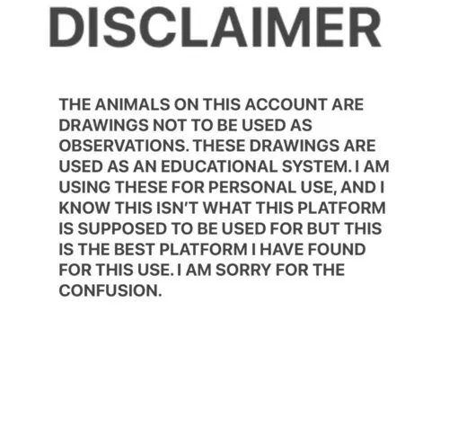

甲壳动物 · 动物界
雪人蟹 Kiwa hirsuta

2005 年在南太平洋深海热液区发现的盲蟹，全身覆盖白色绒毛，螯足上培养细菌为食，是深海化能生态系统的代表物种。
- 分类
- 门节肢动物门纲软甲纲目十足目科基瓦蟹科属基瓦蟹属
- 栖息环境
- 水深约 2200 m 的深海热液喷口附近
- 地理分布
- 南太平洋复活节岛附近的深海热液区
- 保护级别
- IUCN 暂无评估；栖息地受深海采矿潜在威胁
物种志
雪人蟹头胸甲宽约 15 cm，全身覆盖着浓密的白色刚毛，看起来像披了一件毛茸茸的外套，因此得名；它的眼睛退化，几乎看不见东西，螯足和步足上长满细菌。
它于 2005 年在南太平洋复活节岛附近的深海热液喷口被发现，栖息于水深约 2200 m 的深海热液区，靠螯足上的化能合成细菌为食。雪人蟹会用螯足刮取细菌，也会捕食小型甲壳动物。它的发现让科学家认识到，深海热液生态系统中的生物可以依靠化学能而不是太阳能生存。雪人蟹的白色绒毛实际上是细菌附着的场所，这种共生关系是深海研究的热点；它的分类地位特殊，属于独立的基瓦蟹科。目前 IUCN 暂无评估；它生活在受深海采矿威胁的区域，需要加强保护研究。
形态与习性
- 食性靠螯足上的化能合成细菌为食，也捕食小型甲壳动物
- 体型头胸甲宽约 15 cm
- 识别全身覆盖白色刚毛，眼睛退化
- 栖息水深约 2200 m 的深海热液喷口
- 共生刚毛上培养细菌，靠化学能生存
- 发现2005 年在南太平洋深海热液区被发现
趣味知识
- 雪人蟹全身长满白色绒毛，看起来像一个毛茸茸的雪人。
- 它的眼睛已经退化，几乎看不见东西，主要靠感觉器官活动。
- 螯足上的绒毛是细菌的“农场”，雪人蟹靠吃这些细菌生活。